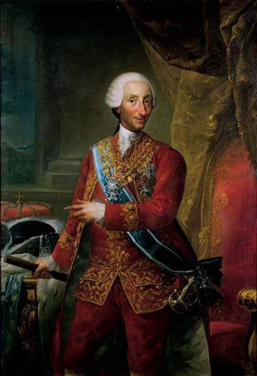
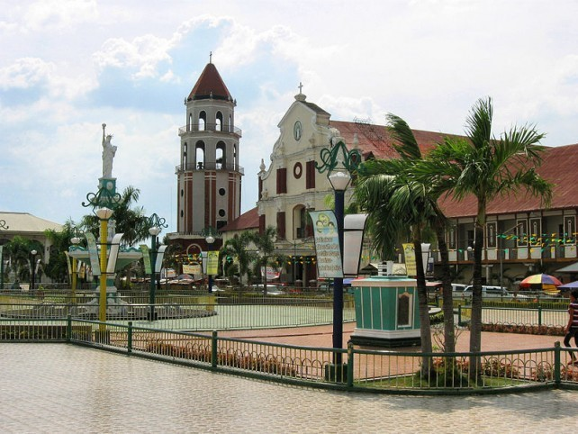
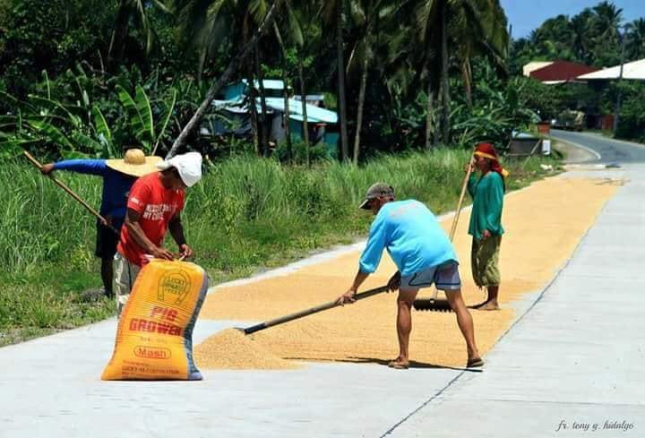

HISTORY
Even before the Spaniards came to the country, Binalatongan (original name of San Carlos) was already having an organized trading system with the neighboring countries like China, Japan and India. There was already a well developed agricultural system in the place and the people were groomed by gold accessories. So when the Spaniards came, they were surprised how well-developed Binalatongan and its people were.

When the Spaniards came, Binalatongan underwent a development as these colonizers introduced European culture in the place. From the time of its founding up to the middle of the 19th century Binalatongan composed a whole third of the province and was recorded as a bastion of freedom fighters and uprising against the Spanish colonizers. Heroism was exemplified by native born heroes like Don Andres Malong in 1660 and Juan de la Cruz Palaris a hundred years later in 1762 who drove out the Spaniards from the province of Pangasinan albeit for two brief years.
Deeply embarrassed by these rebellions, King Carlos III of Spain ordered the Spanish rulers to raze the town of Binalatongan to the ground and changed its name to San Carlos when they moved it to its present site. Binalatongan during the height of its popularity served the Dominican Fathers as the center of their annual provincial chapter and because of this it was mistakenly referred to as the capital of Pangasinan. It had the largest church in the province which was equipped with the biggest and most sonorous church bell in the country. The pride and joy of Binalatongan belfry was irretrievably lost when the big raft carrying it to the new site staggered under its weight and sank to the bottom of the San Juan River.
 San Carlos, considered since Hispanic times as biggest and most populous town of Pangasinan, became a city by virtue of R.A. No. 4487 signed June 19, 1965 which was sponsored by Congressman Angel B. Fernandez . After overwhelming ratification by the residents, San Carlos became a city in January 1, 1965.
Population/ Language/ Area
The city covers a total land area of 188,816 hectares based on the total assessment reported by the City Assessor in 2010 and is primarily an agricultural city. In 2007 it was reported that the total land area of 170,087 but thru re-tax mapping, properties were identified and therefore there was an increase in land area. However, it is experiencing a shift in land use, with agricultural use decreasing from 80% of the total land area in 1977 to only 75% in 1988. The decrease of 2,234 hectares of agricultural land is due to the 2006 land use plan which appropriates more space to the residential, commercial and industrial sectors.
Products and Services
 San Carlos City is among the liveliest places in the Province of Pangasinan in terms of economic activity. Called the “Mango-Bamboo Capital of the Philippines”, San Carlos has the largest number of fruiting mango trees – their fruits are among the most delicious in the country – and a flourishing bamboocraft industry. An agro-industrial city, San Carlos also engages in livestock raising, crop production, inland fishing, pottery, food processing, tourism, and commerce. San Carlos is said to have an ideal investment potential because of its large land area, big population and strategic location, being in the center of Pangasinan. Farming, inland fishing, commerce and trade, small-scale manufacturing, handicraft, pottery, fruit-raising, flour-making, and mango production are also some of the principal products of San Carlos.
Tourist Spots
Interesting spots of the city are such as the 424-year old St. Dominic Church, the Speaker Eugenio Perez Memorial Park, the City Plaza, the Quadricentennial Arch in Bolingit; the Binalatongan Ruins in San Juan, the Philippine Fruit Corporation at Barangay Pagal and the Shopping Malls and Supermarkets and business establishments, with its “Las Bellas Carlenians.”